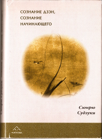

|  |
Книга Сюнрю Судзуки «Сознание Дзэн, сознание начинающего» (перевод 1995 года) доступна с нашего сайта в следующих форматах: 6,8Мб, DjVu 200 dpi (наименьший размер файла)13Мб, DjVu 300 dpi (обычное качество, рекомендуется) 21Мб, DjVu 400 dpi (высокое качество) 71Мб, pdf (лучшее качество, наибольший размер файла) |